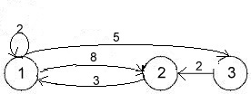

Algorithm
We do a DFS traversal of the given graph. For every visited vertex ‘v’, if there is an adjacent ‘u’ such that u is already visited and u is not parent of v, then there is a cycle in graph. If we don’t find such an adjacent for any vertex, we say that there is no cycle. The assumption of this approach is that there are no parallel edges between any two vertices.
For example in the below graph

There is a cycle 1-2-3.
Source Code
#include <bits/stdc++.h >
using namespace std;
struct node
{
int x;
int val;
node *next1;
};
//funtion to create a directed graph using adjaceny list
void addedge(node a[],int *q,int src,int dest,int dist,int v)
{
node *ptr=new node();
node *head=a[src].next1;
ptr->x=dest;
ptr->val=1000;
a[src].next1=ptr;
ptr->next1=head;
//Way to enter values in a 2-d array passed as a parameter
q[(src*v)+dest]=dist;
}
int main()
{
int v;
cout<<"enter number of vertices"<<endl;
cin>>v;
//here take v according to the vertices given below.It is 3 here
node graph[v];
int d[v][v];
//To assign initial distances between each and every vertex
for(int i=1;i<=v;i++)
{
for(int j=1;j<=v;j++)
{
if(i==j)
d[i][j]=0;
else
d[i][j]=10000;
}
}
//use any of the given below to create an edge
/* while(cin.get()!='\n')
{
cin>>m>>k;
addedge(graph,m,k);
}*/
//or
addedge(graph,&d[0][0],1,2,8,v);
addedge(graph,&d[0][0],1,3,5,v);
addedge(graph,&d[0][0],2,1,3,v);
addedge(graph,&d[0][0],3,2,2,v);
//print starting step
for(int i=1;i<=v;i++)
{
for(int j=1;j<=v;j++)
{
cout<<d[i][j]<<"\t";
}
cout<<endl;
}
int k=1;
while(k<=v)
{
for(int i=1;i<=v;i++)
{
for(int j=1;j<=v;j++)
{
d[i][j]=min(d[i][k]+d[k][j],d[i][j]);
}
}
//To print each and every step.
/* for(int i=1;i<=v;i++)
{
for(int j=1;j<=v;j++)
{
cout<<d[i][j]<<"\t";
}
cout<<endl;
}*/
k++;
}
//print last step
for(int i=1;i<=v;i++)
{
for(int j=1;j<=v;j++)
{
cout<<d[i][j]<<"\t";
}
cout<<endl;
}
return 0;
}